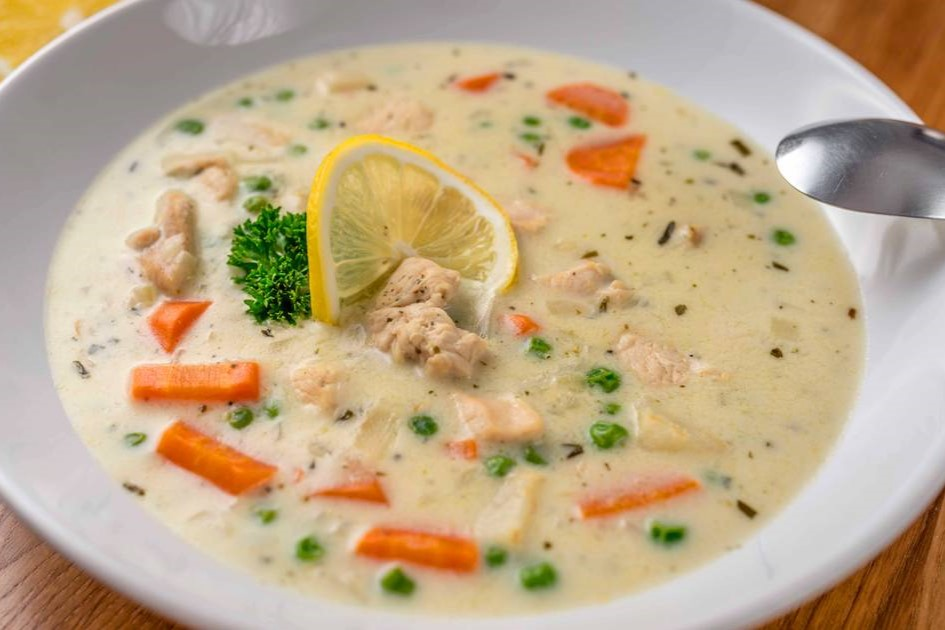

Tárkonyos csirkeraguleves
Miért ez a kedvencem?
Azért, mert én nem szívesen eszem meg más húst a csirkén kívül. Ez a leves sok zöldséget tartalmaz, és nem túl nehéz elkészíteni. Tésztával, grízgaluskával is nagyon jó.
Na de mi is ez valójában?
Ebben a levesben a csirkehús mellett olyan zöldségek találhatók, mint a répa, zeller, és gomba, amelyek egy krémes alapba kerülnek. A tárkony frissítően fanyar ízt ad az ételnek, ami tökéletesen kiegyensúlyozza a leves lágy krémességét. Gyakran tejföllel vagy tejszínnel gazdagítják, és akár frissen sült kenyérrel is tálalják.

Készítsük el!
Hozzávalók
- 2 db csirkemellfilé
- 1 fej vöröshagyma
- 3 gerezd fokhagyma
- 3 db sárgarépa
- 2 db fehérrépa
- 1 db karalábé
- 1 db zeller
- 20 dkg gomba
- 20 dkg zöldborsó
- 4 ek olaj
- só
- bors
- tárkony
- 4 db leveskocka
- 2 dl főzőtejszín
- 1 ek liszt
- 1 csokor petrezselyem
- 0.5 db citrom
Hogyan?
- A tárkonyos leves elkészítéséhez elsőként a csirkemellfilét apró kockákra vágjuk. A vörös- és fokhagymát felaprítjuk. A zöldségeket megtisztítjuk, és a zöldborsó kivételével felkockázzuk.
- Egy nagy lábosban felhevítjük az olajat, és megdinszteljük rajta a vöröshagymát. Hozzáadjuk a húst, és fehéredésig pirítjuk.
- Hozzáadjuk a kétféle répát, a karalábét, valamint a zellert, és 5 percig dinszteljük. Sóval, borssal, tárkonnyal és az aprított fokhagymával fűszerezzük.
- Azután felöntjük annyi vízzel (2 liter), amennyi levest szeretnénk készíteni. Beletesszük a leveskockákat, felforraljuk, majd hozzáadjuk a zöldborsót és a gombát. Addig főzzük, míg minden alapanyag megpuhul (kb. 10 perc).
- Egy kis tálba öntjük a tejszínt, beleszórjuk a lisztet, és elkeverjük. Rámerünk 3-4 merőkanál forró levest, simára keverjük, majd a forrásban lévő leveshez adjuk. Forralunk rajta egyet, végül hozzáadjuk az apróra vágott friss petrezselymet és a frissen facsart citromlevet. (Ajánlatos kóstolgatni, inkább kevesebb citromot adjunk hozzá, amit tálaláskor ízlés szerint pótolhatunk.)